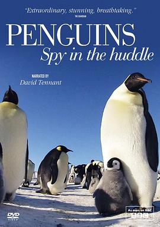

企鹅群里有特务 / Penguins: Spy in the Huddle
又名：卧底企鹅帮 / 企鹅卧底日记 / 企鹅的秘密生活(台) / 企鹅特工队(港)
大家好辛苦啊，谈个恋爱生个孩子吃口饭就要这么拼
作品信息
| 导演 | 约翰·唐纳 |
| 主演 | 大卫·田纳特 |
| 类型 | 纪录片 |
| 制片国家/地区 | 英国 |
| 语言 | 英语 |
| 首播 | 2013-02-11(英国) |
| 集数 | 3 |
| 单集片长 | 60分钟 |
| IMDb | tt2747660 |
最后一次看到是 2026-08-12T21:12:22+08:00 · 豆瓣原页